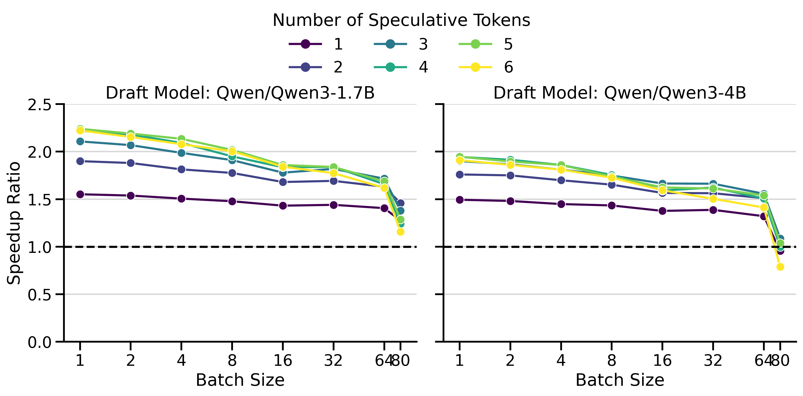
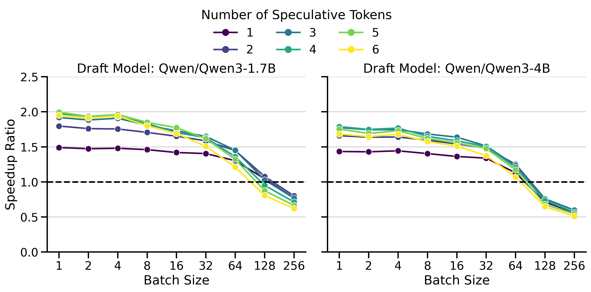
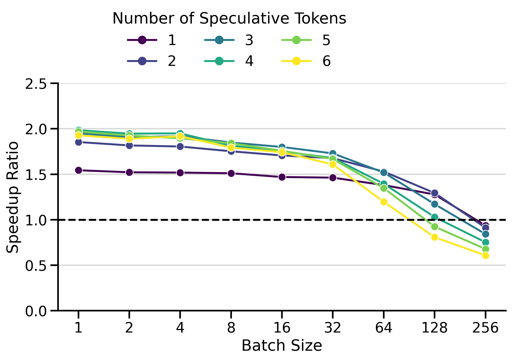
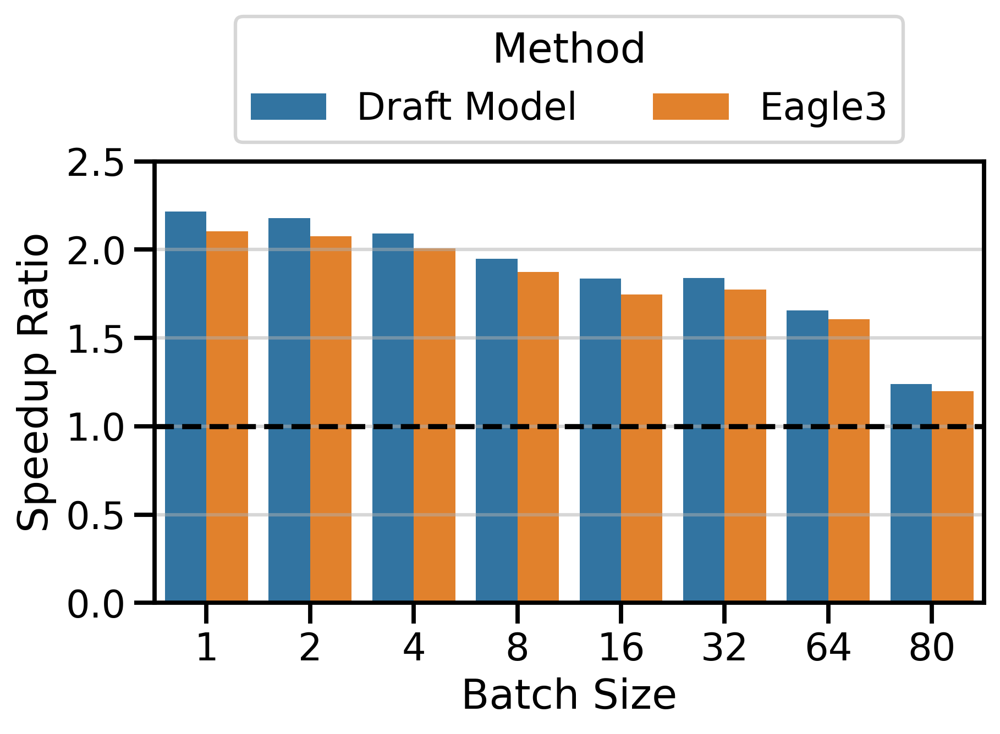
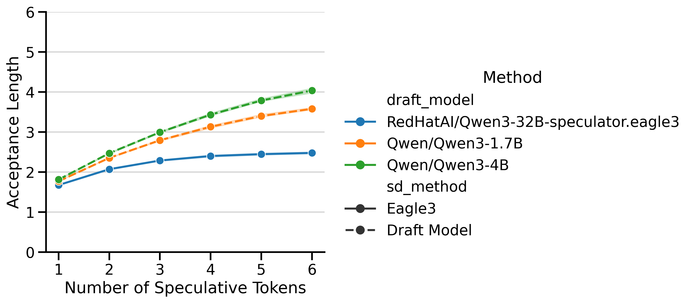
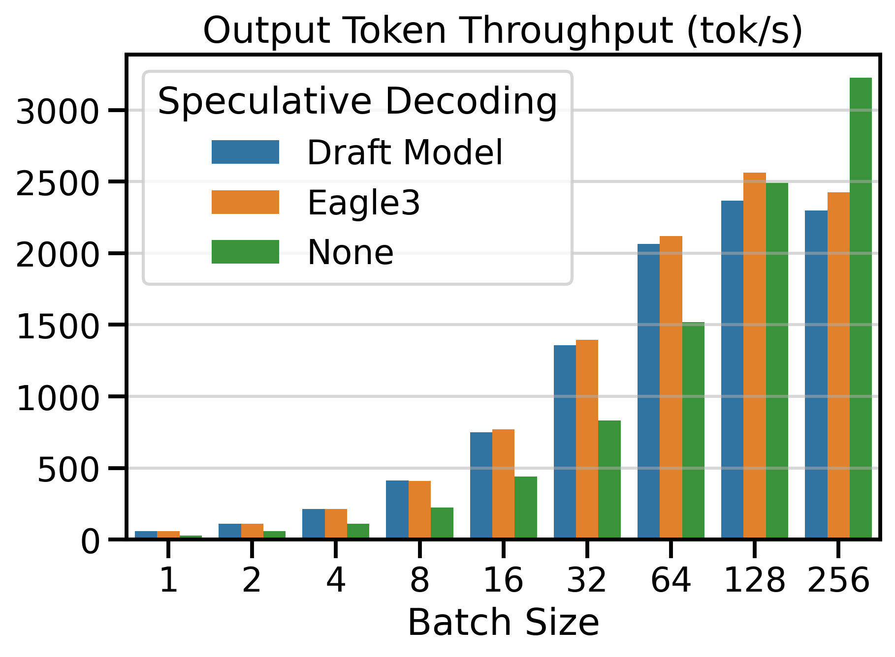
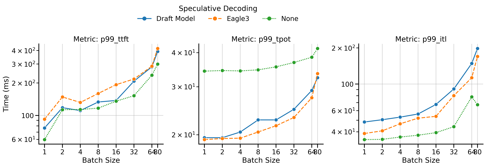

I recently contributed speculative decoding with draft models to vLLM V1 (PR #24322). In this post, I benchmark the performance of my implementation (draft_model) and compare it against vanilla decoding and EAGLE-3, a modern speculative decoding technique supported by vLLM. My benchmarks show that draft_model can achieve speedups of up to 3.55× on InstructCoder, outperforming EAGLE-3, while requiring no specialized training. At the end, I share key learnings from working in the vLLM codebase and a few practical tips for approaching and navigating it.
This is not a tutorial on speculative decoding. I assume you are already familiar with the technique and its basic trade-offs. The focus here is on benchmarking the new code and sharing key learnings.
Background
Speculative decoding is a technique that accelerates LLM inference by using a smaller “draft” model to predict multiple tokens ahead, which are then verified in parallel by the larger target model. This approach can significantly improve throughput, especially in memory-bound regimes with small batch sizes.
A bit of history: Speculative decoding with draft models was previously available in vLLM V0. There’s an excellent GPU Mode lecture by Daniel Cade from June 2024 that outlines the original implementation. However, during the rearchitecting to V1, this feature was removed and hadn’t been reimplemented until now.
Using Speculative Decoding
To use speculative decoding with vLLM, simply pass additional arguments to the vllm serve command. You’ll need to specify the draft model and the number of speculative tokens to generate. I also recommend setting --max-model-len to leave more memory for the KV cache.
Benchmarking Setup
Models Evaluated
I evaluated two model families: Qwen3 (dense) and LLaMa 3.3 70B. A summary of the models evaluated is shown in Table 1. For vanilla decoding, I evaluate the target model without any speculative decoding. Within the Qwen3 family, using the 0.6B model as a draft_model raised a runtime exception (likely a bug). The Qwen3 familiy was evaluated on a single NVIDIA H100 GPU, while the LlaMa 3.3 family required 2× H100 GPUs (tensor-parallelism).
Datasets
I evaluated performance on two datasets:
MT-Bench8: A dataset of 80 multi-turn questions used to benchmark speedups in the EAGLE-3 paper by Li et al. (2025). This dataset is too small to test batch sizes larger than 80 without repeating prompts.
InstructCoder9: A dataset of 114k prompts about programming tasks. This larger dataset enables testing at higher batch sizes (I benchmark up to 25610). Programming tasks typically contain substantial repetition between input and output tokens, which may be beneficial for speculative decoding.
Benchmarking Methodology
The benchmarking code can be found on Github. All benchmark results are available in a single Parquet file for download.
I benchmarked performance using vllm bench serve to inference metrics: token throughput (toks/s), TTFT, TPOT, and ITL. The speedup ratio metric is computed as the token throughput of speculative decoding over vanilla decoding. All experiments were run with temperature set to 0.0 (greedy sampling) because vLLM does not yet support lossless sampling with temperature > 0.0. This feature has an open PR. I ran benchmarks across different batch sizes, since speculative decoding is known to be most effective in lower batch sizes. The batch size is implemented as concurrent requests sent to the server (--max-concurrency). I set --request-rate equal to --max-concurrency to prevent all prefills from happening at the exact same time, which would inflate the TTFT for vanilla decoding.
Example Benchmarking Command
vllm bench serve \
--model Qwen/Qwen3-32B \
--dataset-name hf \
--dataset-path likaixin/InstructCoder \
--max-concurrency 32 \
--request-rate 32 \
--num-prompts 320 \
--temperature 0.0 \
--top-p 1.0 \
--ready-check-timeout-sec 600--num-prompts, I use 10 times --max-concurrency or at least 50 prompts.
Example Benchmarking Output
============ Serving Benchmark Result ============
Successful requests: 320
Failed requests: 0
Maximum request concurrency: 32
Benchmark duration (s): 47.20
Total input tokens: 48266
Total generated tokens: 63991
Request throughput (req/s): 6.78
Output token throughput (tok/s): 1355.72
Peak output token throughput (tok/s): 576.00
Peak concurrent requests: 56.00
Total token throughput (tok/s): 2378.30
---------------Time to First Token----------------
Mean TTFT (ms): 192.97
Median TTFT (ms): 140.48
P99 TTFT (ms): 629.06
-----Time per Output Token (excl. 1st token)------
Mean TPOT (ms): 21.75
Median TPOT (ms): 21.67
P99 TPOT (ms): 26.55
---------------Inter-token Latency----------------
Mean ITL (ms): 61.50
Median ITL (ms): 58.23
P99 ITL (ms): 114.37
---------------Speculative Decoding---------------
Acceptance rate (%): 46.13
Acceptance length: 2.85
Drafts: 22519
Draft tokens: 90076
Accepted tokens: 41554
Per-position acceptance (%):
Position 0: 71.44
Position 1: 49.82
Position 2: 36.32
Position 3: 26.96
==================================================Hardware
The Qwen3 experiments were run on an NVIDIA H100 96GB GPU, within the SLURM cluster of the LRZ AI Systems, while the LLaMa 3.3 experiments were run on a 2× H100 80GB GPU launched from NVIDIA Brev.
Results
Versus Vanilla Decoding
I compare the token throughput of speculative decoding (draft_model) vs. vanilla decoding on Figure 1. We observe that using speculative decoding dramatically increases token throughput compared to vanilla decoding. The number of speculative tokens \(K\) was chosen to maximize the speedup ratio. In the next section, we see what happens when we change \(K\).


Optimal Number of Speculative Tokens \(K\)
The optimal value of \(K\) depends on the acceptance rate of draft tokens, which varies with the data distribution. If \(K\) is set too high, the model wastes time predicting draft tokens that will be rejected. If \(K\) is set too low, we miss potential speedups.
To highlight this dynamic, I compared speedup ratios across different values of \(K\). The results are shown in Figure 2. The y-axis shows the speedup ratio (or simply speedup), which measures how much faster speculative decoding is compared to vanilla decoding (in wall-clock time). A speedup of 2× means speculative decoding finishes the workload in half the time of vanilla decoding.


The results show several key patterns:
Multi-GPU Setting: The greatest speedups (3.55×) were achieved with LLaMa 70B on 2× H100s. Surprisingly, inter-GPU communication overhead doesn’t dominate. draft_model works well with tensor parallelism > 1.
Batch Size Dependency: Speedups peak at small batch sizes (concurrency 1-4) and decay at larger ones. At batch size 128+, speculative decoding becomes slower than vanilla decoding. This aligns with the literature (Li et al. 2025; Tang et al. 2025): speculative decoding helps most in the memory-bound regime, but adds overhead in the compute-bound regime.
Saturation Effect: Increasing \(K\) beyond a threshold yields no further gains. Saturation occurs around \(K=3\)-\(4\) for Qwen3 and \(K=7\) for LLaMa 70B.
Draft Model Size Trade-off: The smaller 1.7B draft model achieves higher speedups than the 4B, despite the 4B having better acceptance rates (Figure 5). The 4B’s slower inference limits its overall speedup.
Low \(K\) Robustness: In InstructCoder (Qwen3), \(K=1\) achieves modest speedups at small batch sizes, but degrades more gracefully at large batch sizes than higher \(K\) values.
Versus EAGLE-3
EAGLE-3 is a modern speculative decoding technique supported by vLLM that uses lightweight draft models trained specifically for speculative decoding. The EAGLE-3 paper by Li et al. (2025) reports speedup ratios on SGLang11 between 1.38× and 1.82× at batch sizes ranging from 2 to 64 (table 3), and slightly lower speedups on vLLM (table 5).
My own benchmark results in Figure 3 show greater speedups on vLLM: peaking at 2.94× for the LLaMa 70B family and 2.10× for the Qwen3 family. This confirms that EAGLE-3 works very well on vLLM and provides a strong baseline against which to compare my draft_model implementation.


Figure 4 compares the speedup ratios of both speculative decoding methods. I used \(K=4\) in the Qwen3 family and \(K=7\) in the LLaMa 70B family. The speedups of draft_model are surprisingly good, often exceeding those of EAGLE-3 by a significant margin. This is particularly visible on InstructCoder (LLaMa 70B setting) and MT-Bench (Qwen3 setting). Both methods have very similar speedups on InstructCoder (Qwen3 setting).



Both EAGLE-3 and draft_model have very different Acceptance Lengths (AL), shown in Figure 5. The AL curve for EAGLE-3 is flatter, meaning that predicting more tokens leads to diminishing returns. In contrast, the AL curve for draft models continues to climb with more speculative tokens. The shaded area represents (min, max) ALs over different batch sizes12. Despite the EAGLE-3 draft models being lighter, the lower AL is a limiting factor that prevents it from reaching the same speedups as draft_model.


Token Throughput
Figure 6 shows the Output Token Throughput (toks/s) metric for both speculative decoding methods and vanilla decoding (SD=None). Using a speculative decoding method outperforms vanilla decoding up to batch size 64. Beyond this point, the throughput of speculative decoding methods plateaus, while vanilla decoding continues to scale with larger batch sizes.



Inference Metrics
The vllm bench serve command reports several request-level inference metrics (lower is better for all):
- TTFT: Time to first token
- TPOT: Time per output token (excluding the first token)
- ITL: Inter-token latency
The benchmark reports means, medians, and 99th percentiles for these metrics. Figure 7 shows the 99th percentile values for both speculative decoding methods and vanilla decoding.


All metrics generally increase (worsen) with batch size. Note that the graph shows worst-case statistics (99th percentile). We observe the following patterns:
- TTFT: The TTFT is generally higher for speculative decoding methods than vanilla decoding because the server must prefill with both the draft and target models, rather than just the target model. In MT-Bench (Qwen3), the TTFT of EAGLE-3 is consistently higher than for draft_model, which is surprising since EAGLE-3 drafters are lighter.
- TPOT: Both speculative decoding methods significantly reduce TPOT compared to vanilla decoding, particularly in low batch sizes.
- ITL: The inter-token latency (ITL) differs from TPOT in a subtle way: it measures the time between batches of tokens as seen by the client. During speculative decoding, the client receives batches of multiple tokens, so ITL will be higher than TPOT. In vanilla decoding, ITL and TPOT should be equal or very similar. In the plot, vanilla decoding (SD=None) has the lowest ITL, followed by EAGLE-3, and finally draft_model.
Discussion
Limitations
The draft model must share the same tokenizer as the target model, i.e., both models must “speak the same language.” This is typically the case when models belong to the same family.
At the moment, draft_model is limited to models with only a single KV-cache group. There is an open issue about this on Github (#33133)
My benchmarks use the default --output-len=200 parameter, which means that the speedups presented are valid for short-context inference. Long context inference is more complex: performance is bottlenecked KV-cache loading, and batch sizes must become a lot smaller to fit in VRAM. I might publish an analysis of long-context performance in the future.
When to Use Draft Models vs. EAGLE-3
My benchmarks show that draft_model outperforms EAGLE-3 in 2 of 3 tested settings, primarily due to higher acceptance lengths (Figure 5). Prefer draft_model when a smaller model from the same family is available, no training required. Distilled models (trained to mimic the larger model’s logits) work especially well. Consider EAGLE-3 when a pre-trained EAGLE-3 drafter exists on Hugging Face and you want the lowest possible overhead. When in doubt, benchmark both methods on your workload. You can also train your own using the vLLM speculators library13.
Key Learnings
Side-Effects
The vLLM project uses a lot of side effects, which can make it difficult to understand what the inputs to the model really are. The most important example to understand is the forward_context object, which is a global variable that contains information about every layer in the model and references its KV cache. The forward context is manipulated at runtime with the set_forward_context() function, here in the main loop of the gpu_model_runner.py file. It looks similar to Listing 1, and it’s important to understand that it partially determines the inputs to the model.
with set_forward_context(
... # A bunch of params that determine the inputs to the model
):
self._model_forward(
... # What you THINK are the only inputs to the model
)The forward context contains, for example, the AttentionMetadata.slot_mapping object containing pointers to the KV cache. If these pointers are incorrect, the KV cache will be corrupted at runtime, and your outputs will be garbage. Saving to the KV cache happens concretely in the function reshape_and_cache_flash() (FlashAttention code path: permalink). The function directly takes this slot_mapping tensor as an input.
Performance Optimizations
The three biggest performance themes I ran into were: CUDA graphs, avoiding CPU–GPU synchronizations, and Triton kernels and Fusion.
CUDA Graphs
CUDA graphs are a complex topic by themselves, but in short: they make the code within the graph run impressively fast. There is an introduction to CUDA graphs in the vLLM docs14. What’s important to understand is that CUDA graphs require the input and output tensors (buffers) to be allocated before running the code (i.e. no dynamic-shape allocation of PyTorch tensors during the graph’s execution). All operations on buffers must be done in-place, rather than creating new tensors, so the code becomes heavy in side-effects. I found that if you run CUDA graphs, but don’t reuse the buffers, you will not get hard exceptions, but rather your outputs will be garbage, again. The forward context I mentioned earlier includes the batch_descriptor and cudagraph_runtime_mode objects, which together determine which CUDA graph mode the model will dispatch to. This is why you find comments like Listing 2 everywhere in the codebase.
# Run the model.
# Use persistent buffers for CUDA graphs.
with set_forward_context(...):CPU-GPU synchronizations
To write fast and efficient PyTorch code, it’s important to avoid CPU-GPU synchronizations. Synchronizations prevent the CPU from scheduling enough work for the GPU to keep it busy, leading to low GPU utilization. I wrote a full-length separate post about them, which I recommend reading for a deeper explanation including PyTorch examples.
Triton Kernels
Preparing the input tokens for the speculative decoding draft model required a lot of small PyTorch operations. Launching many small kernels incurs unnecessary overhead (2-3µs per kernel). To fuse all these operations into a single one, I implemented a custom Triton kernel. The kernel is quite simple, but it replaced around 8 calls to PyTorch functions, avoiding their launch overhead. If you are interested in learning about Triton kernels, I recommend looking at the tutorial examples. The language is easy to learn and it gets you 85% of the way to speed-of-light performance.
Contributing to vLLM
In this section, I share some tips about how to approach the vLLM codebase as a new contributor.
Start High-Level
Introduce one or more unit tests for your desired API (e.g., method=draft_model for speculative decoding). Think about how, as a user, you would observe the outputs to identify if the API is correct (e.g., acceptance_rate=100% in greedy decoding). Then go ahead and run the tests. You will find yourself waiting for vLLM to spin up and compile the model, so you want to deactivate all features that make you wait for your code to execute (e.g., pass --enforce-eager). The reason is that slow feedback loops sap your focus and kill your flow. You will obviously hit errors that prevent your feature from working, but that is the goal. You are working from the inside out, catching and solving problems locally one at a time without having to understand the whole codebase at once. Set a debugger and try to understand only one error at a time, interactively and with the local context. vLLM is a very complex system, and trying to understand the whole codebase at once would be overwhelming and lead to frustration. Reading about the big picture of the codebase can be useful after getting some exposure to the codebase, e.g., in this post by Aleksa Gordić.
Use the Debugger
Most features require you to manipulate tensors and change their shape or content. This type of PyTorch code is often not simple to read or write, because it’s often more imperative than declarative. Good contributors comment their code to communicate the intent without repeating the code itself, and without making the code so verbose that it’s buried in noisy comments. For code regions heavy in PyTorch code, I suggest factoring out a pure Python function that you can test independently. Then you can create a unit test for it and easily set breakpoints in the function without having to restart the entire vLLM server (which is very slow).
Test Extensively
I mentioned that you speed up your feedback cycles by passing, e.g., --enforce-eager, but that leaves the most important paths of the codebase untested. In production, you never run in eager mode, so you want to test these paths as well. I recommend the pytest.mark.parametrize decorator to test your code with different inputs, e.g., as shown in Listing 3 to test both eager and compiled mode. If you look at my draft_model PR, you will find that I used parametrizations almost obsessively to test many combinations. For example: Is the target model in FP8 or FP16? Is the draft model in FP8/FP16? Are we using greedy sampling or temperature >= 0.0? Is the target model using tensor parallelism of 1 or more? What happens if we pass invalid combinations of these parameters? Obviously, these are specific cases for speculative decoding, and the code paths that are relevant to your feature will become apparent as you understand the code from the outside in.
@pytest.mark.parametrize("enforce_eager", [True, False])
def test_draft_model_correctness(enforce_eager):
...Code Evolution
The vLLM project has far more contributors than reviewers, so many PRs sit unreviewed for extended periods. My PR was open from 2025-09-05 and merged on 2026-01-19, which is 136 days, or about 4.5 months, despite having relatively engaged reviewers. With the vLLM codebase evolving so quickly, this long review cycle meant I had to resolve merge conflicts at least 10 times.
After resolving several painful conflicts, I learned that certain types of changes and patterns are more likely to cause conflicts. For example, moving a function to a new file and changing its body creates painful merge conflicts, because the function continues to evolve on the main branch in its old location. The same applies to extracting a superclass or child class, changing its body, and then moving it to a new file.
While we shouldn’t plan for PRs to stay open this long, we should be prepared for the main branch to evolve in parallel to our PR. One strategy is to modify functions and classes in-place (within the same file) and defer moving them to other files in a subsequent PR. This might sound counterintuitive to experienced engineers, but it proved effective to minimize merge conflicts.
Summary
In this post, I benchmarked the implementation of speculative decoding with draft models I contributed to vLLM V1 (PR #24322) and compared it against vanilla decoding and EAGLE-3. On MT-Bench and InstructCoder, it delivers substantial speedups (up to 2.24×) without specialized training. Speedups are most pronounced at smaller batch sizes and fade at larger batch sizes. The performance numbers are meant as a reference as of today (2026-01-25, commit e1a34c3), and can vary with model, workload, and deployment. Finally, I hope the key learnings and contributor tips I shared here help other new vLLM contributors get productive faster.
Acknowledgments
I thank the reviewers and collaborators of the vLLM project who engaged with my PR and provided valuable feedback: Benjamin Chislett from NVIDIA, Ekagra Ranjan from Cohere, Lily Liu from OpenAI, Wentao Ye from Red Hat, Harry Mellor from Hugging Face.
References
Footnotes
https://huggingface.co/RedHatAI/Qwen3-32B-speculator.eagle3↩︎
https://huggingface.co/yuhuili/EAGLE3-LLaMA3.3-Instruct-70B↩︎
On InstructCoder with LLaMa 70B the KV cache fills up completely at batch size 64, meaning some requests are put to wait. Increasing the batch size beyond doesn’t increase the parallelism, so I only benchmark up to 64 in this case.↩︎
I had not expected AL variation with batch size. Perhaps batch invariance would solve this.↩︎
Citation
@online{ruiz2026,
author = {Ruiz, Tomas},
title = {Up to 3.55x {Faster:} {Contributing} {Speculative} {Decoding}
with {Draft} {Models} to {vLLM} {V1}},
date = {2026-01-28},
url = {https://tomasruizt.github.io/posts/06_vllm-spec-decode/},
langid = {en}
}